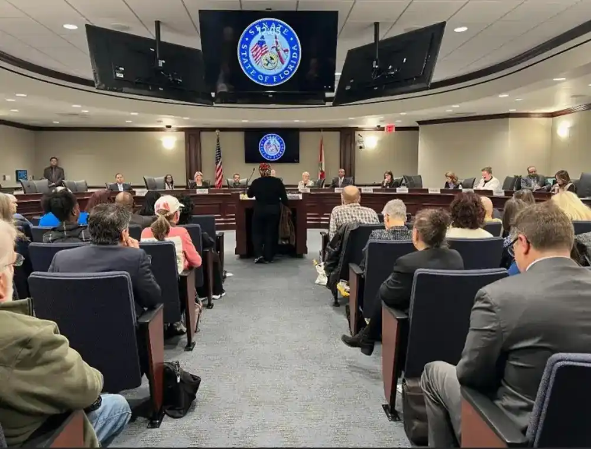

Florida Lawmakers Pass Bill Requiring Citizenship Checks for Voters


Republicans in the Florida House and Senate passed a broad election law mandating citizenship verification for registered voters, sending it to Governor Ron DeSantis for final approval. The legislation, known as House Bill 991, is consistent with broader election law changes pushed by President Donald Trump and incorporates portions of the federal Save America Act.
The legislation passed primarily along party lines, with the Senate voting 27-12 and the House voting 77-28. Supporters of the law contend that it strengthens the integrity of elections and, in turn, fosters greater public trust in how they are conducted. Detractors, however, fear it could create hurdles for countless eligible voters.
Despite significant amendments to the original proposal, Members of Parliament voted to delay the majority of its provisions until after the upcoming midterm elections. This effectively means the new regulations will likely be implemented in 2027.
Florida lawmakers have passed a new election law that will make it necessary to check voters' citizenship more often. People who support the measure say it will make people more confident in elections, while people who oppose it say it could make voting harder for some eligible citizens. If Ron DeSantis signs it, the law would be one of the biggest changes to Florida's voting rules in a long time.

New Citizenship Verification Requirements
A key feature of the legislation compels election officials to check voters' citizenship status against government databases. The Florida voter registration system would be compared to records from the state's driver's license database, which is administered by the Department of Highway Safety and Motor Vehicles.
Because most driver's licenses already comply with federal REAL ID standards, which demand paperwork such as birth certificates or passports, backers claim the process will automatically validate most voters' citizenship. However, officials estimate that over 872,000 Floridians do not possess REAL ID-compliant identification.
To stay eligible to vote, those individuals may be required to present proof of citizenship, such as a birth certificate or passport. The verification process may also affect those who amend their voter registration information, such as changing their names or political party affiliation.
Restrictions on Acceptable Voter Identification
The Act also restricts the sorts of identification that voters can submit at polling stations. Under the new laws, student identification cards and retirement community IDs would no longer be acceptable for in-person voting.
Driver's licenses, state identification cards, military IDs, and concealed weapons permits are all accepted forms of identification. Republican backers stated that the reform is required to prevent the use of counterfeit identification and ensure that voters are correctly identified.
Democrats, on the other hand, fiercely opposed the abolition of student and retirement IDs, claiming that the decision would unfairly harm college students and elderly citizens who may not drive or have up-to-date driver's licenses.
Supporters Emphasize Election Integrity
Republican senators portrayed the legislation as a means of increasing faith in elections and closing potential system flaws. State Senator Erin Grall, the bill's sponsor in the Senate, stated that the modifications are necessary to ensure secure elections.
She referenced investigations conducted by the Florida Office of Election Crimes and Security, which found that 198 people were likely noncitizens who registered or voted unlawfully.
"Supporters say that even a tiny number of incorrect votes can make a difference in close elections. Governor Ron DeSantis also supported the legislation, stating that it will strengthen Florida's position as a leader in election security."
Critics Warn of Voter Disenfranchisement
Democrats and voting rights organizations vehemently opposed the bill, claiming that recorded incidents of noncitizens voting are exceedingly rare and that the new standards could disenfranchise eligible voters.
Opponents noted that many citizens, particularly older voters who registered decades ago or people who have changed their names, may not have immediate access to the documentation required to establish their citizenship.
They also warned that the restricted ID list will create new barriers to voting for particular communities, including students and elders. Voting rights groups have already stated that if the bill is passed into law, it will face legal challenges.
Part of a Broader National Push for Election Changes
Florida's measure comes amid a broader campaign by Republican lawmakers in numerous states to tighten voter identification standards and impose proof-of-citizenship requirements.
Similar measures have been submitted and passed in South Dakota, Utah, Kansas, and Mississippi. These initiatives replicate measures of the federal SAVE America Act, which has been delayed in the United States Senate.
As the national debate over election security and voter access continues, Florida's new law represents one of the most significant state-level steps toward tougher voting standards in recent years.
Reporting for this story drew on coverage from Sun Sentinel, Politico, and NBC News.


Koepka’s Leap of Faith: What Comes Next After LIV Golf Exit
DECEMBER 24, 2025

Skenes and Skubal Win Cy Young Awards as Future Uncertainty Grows
NOVEMBER 12, 2025


Politics

Kevin McCarthy Ousted as House Speaker in Historic Vote
The House kicked out its speaker for the first time in American history after a GOP mutiny joined Democrats in a historic and dramatic vote.
POLITICS BY OCTOBER 18, 2025

Democrats are facing a growing grassroots uprising one year after Trump came back to power
As complaints from inside the party grow after Trump's reelection, younger voters and progressive groups are pushing Democratic leaders to work toward affordable housing, fairer economics, and big changes.
POLITICS BY NOVEMBER 5, 2025

Congress Passes Temporary Spending Bill to Avoid Early 2025 Shutdown
Lawmakers approved a stopgap bill to keep the government funded into March, avoiding an immediate shutdown as both parties brace for a tougher budget fight in weeks ahead.
POLITICS BY NOVEMBER 9, 2025